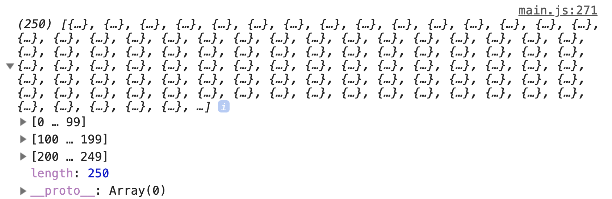
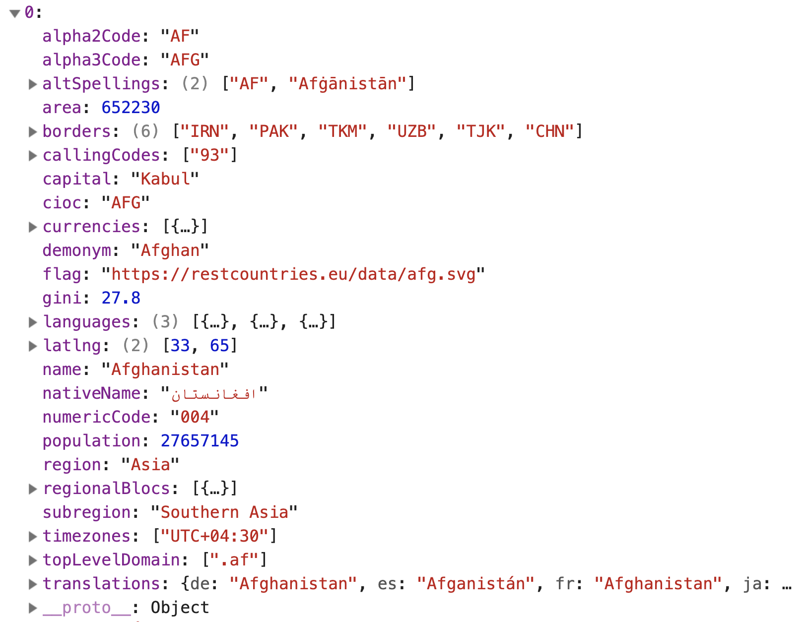
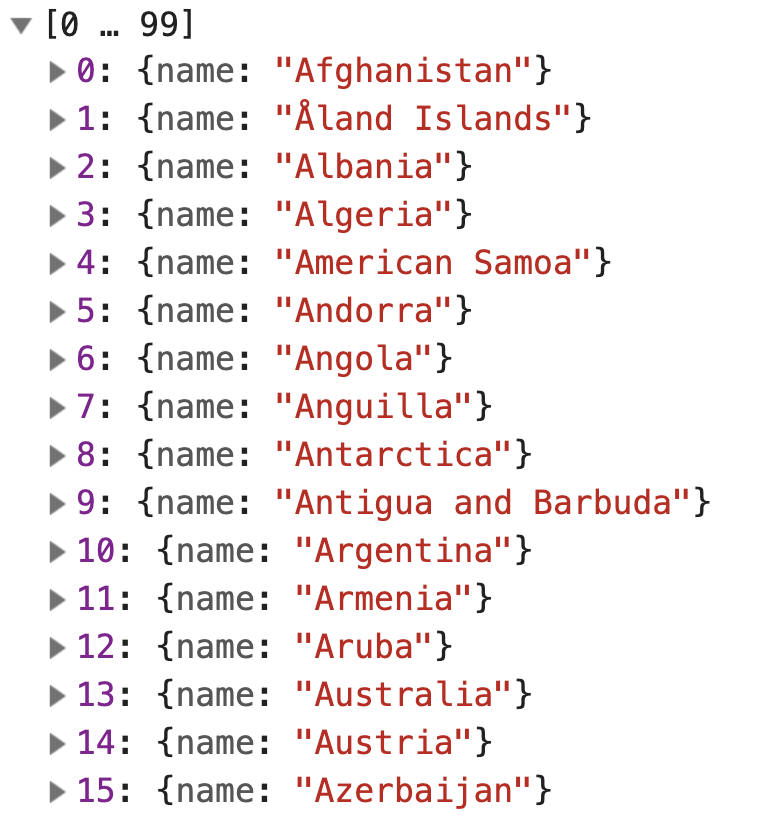
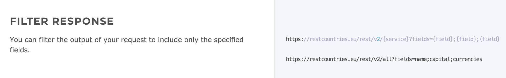
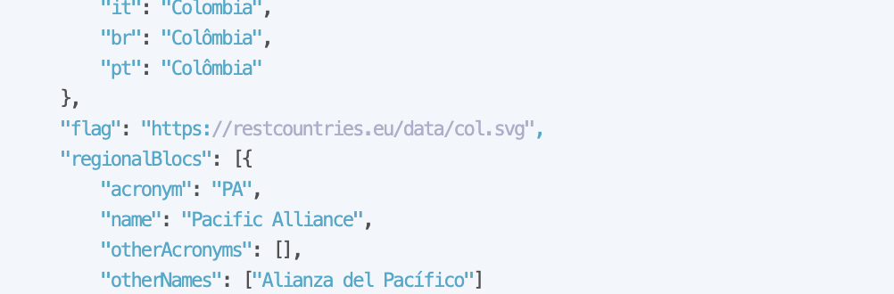
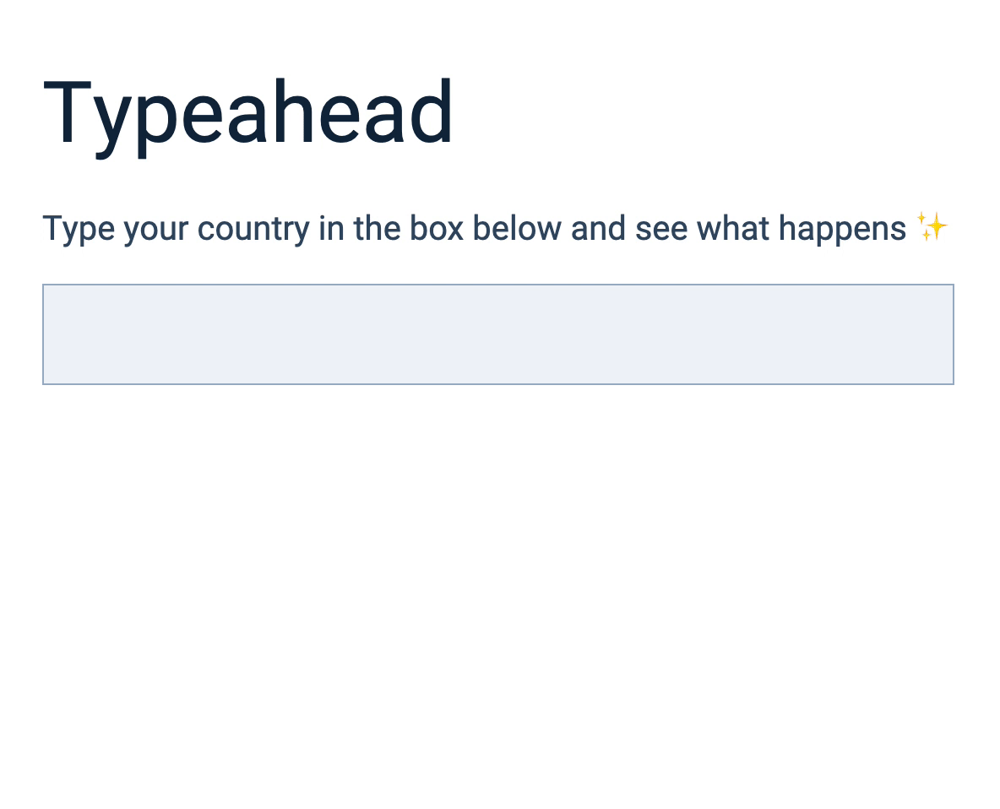
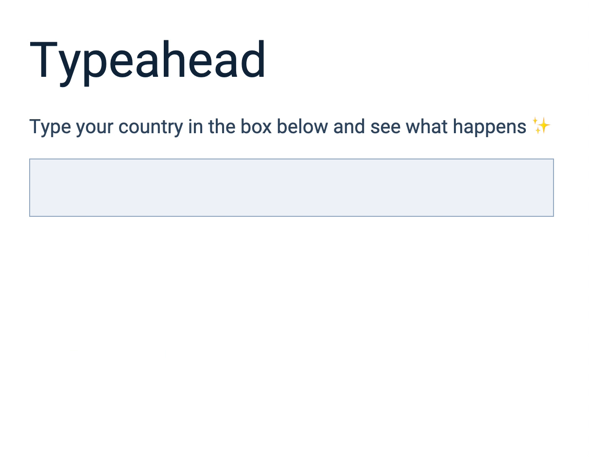

üõ†Ô∏è Typeahead: Adding Ajax
So far, we used the countries array I provided to create a list of predictions. You can do that for your projects too.
But you can also rely on APIs if you want to.
Rest Countries API
There’s an API that lets you fetch a list of countries. It’s called Rest Countries . (This is where I got countries from).
Please read through Rest Countries’ documentation before you continue with the lesson. It’s good practice (and the documentation really short!).
Fetching a list of countries
You can send a GET request to https://restcountries.eu/rest/v2/all to fetch a list of countries.
<body>
<!-- ... -->
<!-- Adds zlFetch -->
<script src="https://cdn.jsdelivr.net/npm/zl-fetch"></script>
<script src="js/main.js"></script>
</body>
zlFetch('https://restcountries.eu/rest/v2/all')
.then(response => console.log(response.body))
.catch(error => console.log(error))

Rest Countries gives you a lot of data about each country.

We don’t need so much information. All we need is the country’s name. We can reduce the information to what we need with map.
zlFetch(/*...*/)
.then(response => {
const countries = response.body.map(country => {
return { name: country.name }
})
console.log(countries)
})

You can also filter the data through the endpoint. You’ll find this information in the documentation. (This is why it’s important to read documentation!).

zlFetch('https://restcountries.eu/rest/v2/all?fields=name')
.then(response => {
const countries = response.body
console.log(countries)
})
.catch(error => console.log(error))
Initiating the Typeahead
We can initiate the Typeahead once we fetched a list of countries. What you do is put both event listeners into the .then call.
zlFetch(/*...*/)
.then(response => {
const countries = response.body
input.addEventListener(/*...*/)
ul.addEventListener(/*...*/)
})
.catch(error => console.log(error))
The event listeners contain a lot of code. It makes it difficult for us to read and understand what happens in the .then call.
What we can do is put the event listeners into a function called initializeTypeahead (or initTypeahead for short).
const initTypeahead = countries => {
input.addEventListener(/*...*/)
ul.addEventListener(/*...*/)
}
It makes sense to declare input and ul variables inside initTypeahead since we don’t use them anywhere else.
const initTypeahead = (typeahead, countries) => {
const input = typeahead.querySelector('input')
const ul = typeahead.querySelector('ul')
input.addEventListener(/*...*/)
ul.addEventListener(/*...*/)
})
We can use initTypeahead like this:
zlFetch('https://restcountries.eu/rest/v2/all?fields=name')
.then(response => initTypeahead(typeahead, response.body))
.catch(error => console.log(error))
Try using the Typeahead now. It should work as before!
Adding country flags
Here’s one fun thing we can do.
The Rest Countries API gives you a country flag for each country in the world. You can get the flag by including flag in the endpoint.

zlFetch('https://restcountries.eu/rest/v2/all?fields=name;flag')
.then(response => initTypeahead(typeahead, response.body))
.catch(error => console.log(error))
We can add the flag to the UI by adding it to the list item.
input.addEventListener('input', event => {
// ...
const listItems = matches
.map(country => {
return `
<li>
<img src="${country.flag}" alt="${country.name}'s flag" />
<span>${boldSearchTerms(country.name, inputValue)}</span>
</li>
`
})
.join('')
})

Selecting predictions (revisit)
Try to select a prediction. You’ll notice it behaves oddly.
The prediction didn’t get selected if you click the country’s flag or name.
The prediction gets selected if you click farther out, but there’s a ton of whitespace in the input.

This happens because we changed the structure of the <li>.
To make the selection work as before, we need to change matches to closest. We need this because there are now elements inside the <li>. (You can skip the change from matches to closest if you set pointer-events: none).
ul.addEventListener('click', event => {
if (!event.target.closest('li')) return
// ...
})
Next, we need to find the <span> element to get the country’s name. We can get the <span> element with querySelector.
ul.addEventListener('click', event => {
const prediction = event.target.closest('li')
if (!prediction) return
const span = prediction.querySelector('span')
const countryName = span.textContent
input.value = countryName
// ...
})
That’s it!